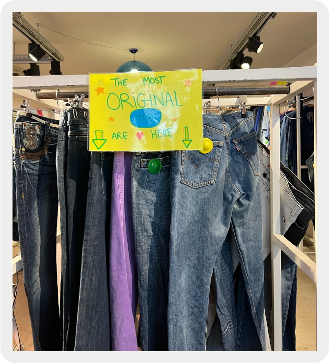
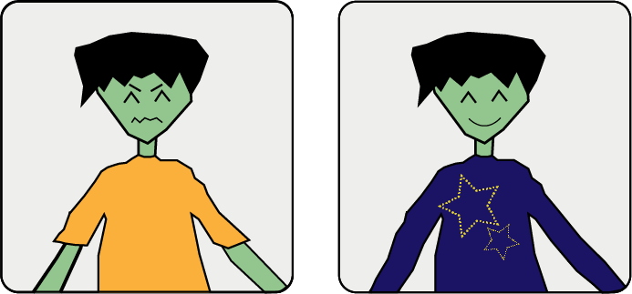
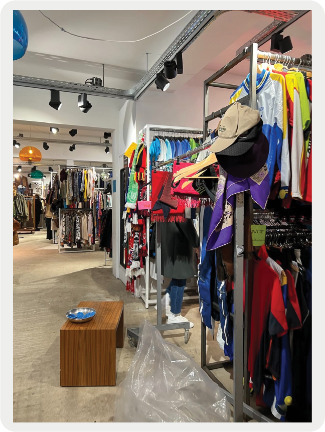
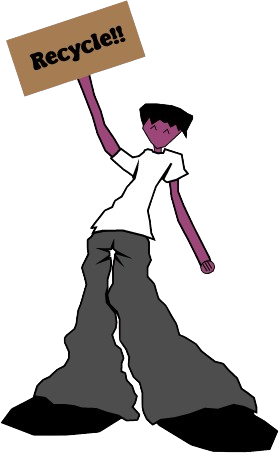

Tips
-
Bezoek regelmatig
Om leuke kledingstukken te vinden is het handig regelmatig in de winkel te kijken. Deze worden vaak hervult dus is het handig langs te gaan om nieuwe stukken te vinden.
 -
Maak een plan
Als u naar de winkel gaat en voor iets bepaald komt, stel een doel op. Er zijn natuurlijk verschillende rekken: broeken, truien, t-shirts etc. Zoek daarom bij het rek waar u iets van wil om te vinden wat jij zoekt.
-
Pas alles
Het is belangerijk om de kleding te passen omdat alles uniek is en het handig is om te zien of alles mooi staat.
 -
Kijk naar kwaliteit
De kleding is natuurlijk tweedehands. De winkel doet zijn best om de mooiste en beste stukken in de winkel te hangen maar het is natuurlijk nog steeds van belang om naar de kwaliteit te kijken om er zeker van te zijn dat uw kledingstuk lang meegaat.
-
Bekijk alle gangpaden
Ondanks dat er veel rekken met kleding zijn, probeer alles te bekijken om de beste stukken te vinden.
 -
Kleed je goed
Omdat de winkel vol is met kleding en veel mensen bezoeken, kan het best warm in de winkel worden. Daarom adviseren wij om niet te dik gekleedt te gaan.
- 